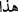

dolaşmaksızın da bilinebiliyorsa, maksat hâsıl olmuş demektir. Âyette “dolaşın”
lafzının tercih edilmesi, bir şeyi müşâhede etmek, duyarak kavramaktan daha tesirli
olduğu içindir. Nitekim “haber almak görmek gibi olamaz” denmiştir. Bu mânada
şöyle bir şiir de vardır:
Eserlerimiz bize delâlet eder,
Öyleyse bizden sonra, eserlerimize bakın.
Peygamberlerimi ve velilerimi “yalanlayanların sonunun nasıl olduğunu”
müşâhede gözüyle ve normal gözle “görün.”
138. Bu (Kur’ân), bütün insanlığa bir açıklamadır; takvâ sahipleri için de bir
hidâyet ve bir öğüttür.
(Hâzâ ) “Bu,” bir önceki âyet-i kerîmeye işaret etmektedir. Yalanlayıcı “insanlara
bir açıklama”; yani, içinde bulundukları yalanlamanın kötü âkıbetini îzâh etmedir.
Çünkü, dolaşıp görme emri, her ne kadar mü’minlere mahsûs bir buyruk ise de bu emir
gereğince amel etmek, sadece bir gruba mahsûs değildir. Âyet-i kerîme, her ne kadar
yalanlayıcıları muhâtap kabul edip onlar için getirilmiş değilse de, onların da
kendilerinden önceki yalanlayıcıların âkıbetlerine bakıp yok edilişlerinden arta kalan ve
müşâhede ettikleri izlerden ibret almaları istenmektedir.
“Beyân” kişinin içindeki şüpheleri izâle ederek hangi mânada olursa olsun hakkı
göstermek, demektir.
“Takvâ sahiplerine” korunanlara; yani size “bir yol gösterme”, ziyâde basîret ve
“öğüttür.” “Mev’ıza” (öğüt) dinde yeri olmayan şeyleri engelleme mânası taşıyan
kelâmdır. “Hüdâ” (yol gösterme) ise insanlar, sırat-ı müstakîmi ve dosdoğru dîni
benimseyip kabul etsinler diye, insanlara rehberlik edip onları irşâd etmeye mahsûs bir
kavramdır.
Müttakîlerin açık açık zikredilmesi, hükmün illetini beyân etmek gayesine mâtuftur.
Çünkü bir önceki âyetin insanlara hidâyet ve öğüt olmasının temel sebebi, bunların
muttakî olmalarıdır.
Bil ki, geçmiş ümmetler, dünyaya ve dünyevî zevkleri elde etmeye karşı harîs
olmaları yüzünden peygamberlere karşı çıkmışlar; sonra dünyalarından hiçbir şey
bırakamadan gitmişlerdir. Bıraktıkları tek şey ise, dünyada lânet; âhirette de azap
edilmelerini gerektirecek davranışlardır. Bu sebeple Cenâb-ı Hak, Hz. Muhammed
(s.a.)’in ümmetini önceki ümmetlerin hâlini düşünmeye, kendilerini Allah’a yöneltip
fânî zevklere ve geçici lezzetlere aldanmaktan yüz çevirmeye sevketmek için, geçmiş
ümmetlerden ibret almaya teşvik ediyor. Çünkü dünya ne mü’mine, ne de kâfire